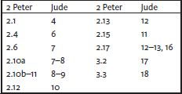

2 Peter
Name and Contents
Like some other New Testament letters, 2 Peter takes its name from the sender of the letter, along with the information in 3.1 that it is his second letter. Its contents can be outlined as follows:
Canonical Status
The earliest list of New Testament documents, the Muratorian Canon (late second century ce), does not include 2 Peter. Likewise, Irenaeus and Tertullian, writing at about the same time, do not mention 2 Peter. Sometime later, Origen (ca. 253) puts 2 Peter in the category of doubtful writings. The earliest surviving copy of 2 Peter is in Papyrus 72, dating from about 300 ce. Copies of 2 Peter are also included in the biblical Codices Vaticanus and Sinaiticus, written about fifty years later. Athanasius (367) includes 2 Peter in his canon list. Since that time, 2 Peter has been accepted by Greek- and Latin-speaking Christians as part of the New Testament, but it was not accepted by Syriac-speaking Christians until the sixth century.
Authorship, Date of Composition, Historical Context, and Literary History
Second Peter identifies its author as Simeon Peter, who was the leader of the twelve apostles of Jesus. Several other details of 2 Peter are consistent with this identification. According to 1.14 Jesus has revealed that the author will soon die; in Jn 21.18–19 Jesus predicts the death of Peter. According to 1.16–18 the author witnessed the transfiguration of Jesus; in Mk 9.2–8 and parallels, Peter witnesses Jesus's transfiguration. In 3.1 the author says that he is writing a second letter, possibly referring to 1 Peter.
Nevertheless, most New Testament scholars do not think Peter is the actual author of 2 Peter. A possible explanation for the composition of the letter by someone other than Peter is that 2 Peter is a testament in letter form. In a testament, a leader says farewell to his followers and gives them ethical advice and/or revelations about the future to guide the followers after the leader's death. Such testaments are usually composed in the leader's name by someone else.
Second Peter may have been written about 125 ce. That date is suggested by the reference in 3.16 to “all” of Paul's letters that ignorant people misunderstand the way they do the “other scriptures.” This implies that at the time 2 Peter was written, there existed a collection of letters of Paul that were regarded as scripture. This might have been true about 125 ce. Second Peter is probably the last writing of the New Testament to have been composed.
The author of 2 Peter has used the letter of Jude as a source. Specifically, 2 Pet 2.1–3.3 is a revision of Jude 4–18, using Jude's language but ordinarily avoiding direct quotation. However, 2 Pet 2.17b quotes Jude 13b, and 2 Pet 3.2–3 quotes Jude 17–18 with several changes.
Interpretation
The argument of 2 Peter is that followers of Jesus should live virtuously as they await his second coming and the fulfillment of his promises. The author warns against false teachers who will scoff at the idea that Jesus will come again and consequently will not encourage virtuous living. In accord with the conventions of the testament form, the appearance of these false teachers is presented as a future problem, but it may be a problem already confronting the author and addressees.
After the salutation of the letter (1.1–2), the author begins by making this argument in general terms, maintaining that because Jesus has given his followers present benefits and the promise of future ones, it is necessary to live virtuously (1.3–11). After explaining that he writes so the addressees will always remember his teaching (1.12–15), the author directly rejects the argument that the second coming of Jesus is a matter of “cleverly devised myths” (1.16–2.10a) and criticizes the immoral behavior of the false teachers (2.10b–22). The author then resumes his argument against those who scoff at the expectation of Jesus's second coming (3.1–13) and brings his testamentary letter to a close (3.14–18).
Second Peter has not been influential in Christian history. One element of it that has often been taken up by others, beginning with Cyril of Jerusalem and Ambrose of Milan, is its statement that followers of Jesus will become “participants of the divine nature” (1.4). Another is its expectation that in the end the world will be destroyed by fire (3.7,10, 12).
Terrance Callan

1
Simeona Peter, a servantb and apostle of Jesus Christ,
To those who have received a faith as precious as ours through the righteousness of our God and Savior Jesus Christ:c
2May grace and peace be yours in abundance in the knowledge of God and of Jesus our Lord.
3His divine power has given us everything needed for life and godliness, through the knowledge of him who called us byd his own glory and goodness. 4Thus he has given us, through these things, his precious and very great promises, so that through them you may escape from the corruption that is in the world because of lust, and may become participants of the divine nature. 5For this very reason, you must make every effort to support your faith with goodness, and goodness with knowledge, 6and knowledge with self-control, and self-control with endurance, and endurance with godliness, 7and godliness with mutuale affection, and mutuale affection with love. 8For if these things are yours and are increasing among you, they keep you from being ineffective and unfruitful in the knowledge of our Lord Jesus Christ. 9For anyone who lacks these things is short-sighted and blind, and is forgetful of the cleansing of past sins. 10Therefore, brothers and sisters,f be all the more eager to confirm your call and election, for if you do this, you will never stumble. 11For in this way, entry into the eternal kingdom of our Lord and Savior Jesus Christ will be richly provided for you.
12Therefore I intend to keep on reminding you of these things, though you know them already and are established in the truth that has come to you. 13I think it right, as long as I am in this body,a to refresh your memory, 14since I know that my deathb will come soon, as indeed our Lord Jesus Christ has made clear to me. 15And I will make every effort so that after my departure you may be able at any time to recall these things.
16For we did not follow cleverly devised myths when we made known to you the power and coming of our Lord Jesus Christ, but we had been eyewitnesses of his majesty. 17For he received honor and glory from God the Father when that voice was conveyed to him by the Majestic Glory, saying, “This is my Son, my Beloved,c with whom I am well pleased.” 18We ourselves heard this voice come from heaven, while we were with him on the holy mountain.
19So we have the prophetic message more fully confirmed. You will do well to be attentive to this as to a lamp shining in a dark place, until the day dawns and the morning star rises in your hearts. 20First of all you must understand this, that no prophecy of scripture is a matter of one's own interpretation, 21because no prophecy ever came by human will, but men and women moved by the Holy Spirit spoke from God.d
2
But false prophets also arose among the people, just as there will be false teachers among you, who will secretly bring in destructive opinions. They will even deny the Master who bought them—bringing swift destruction on themselves. 2Even so, many will follow their licentious ways, and because of these teacherse the way of truth will be maligned. 3And in their greed they will exploit you with deceptive words. Their condemnation, pronounced against them long ago, has not been idle, and their destruction is not asleep.
4For if God did not spare the angels when they sinned, but cast them into hellf and committed them to chainsg of deepest darkness to be kept until the judgment; 5and if he did not spare the ancient world, even though he saved Noah, a herald of righteousness, with seven others, when he brought a flood on a world of the ungodly; 6and if by turning the cities of Sodom and Gomorrah to ashes he condemned them to extinctiona and made them an example of what is coming to the ungodly;b 7and if he rescued Lot, a righteous man greatly distressed by the licentiousness of the lawless 8(for that righteous man, living among them day after day, was tormented in his righteous soul by their lawless deeds that he saw and heard), 9then the Lord knows how to rescue the godly from trial, and to keep the unrighteous under punishment until the day of judgment 10—especially those who indulge their flesh in depraved lust, and who despise authority.
Bold and willful, they are not afraid to slander the glorious ones,c 11whereas angels, though greater in might and power, do not bring against them a slanderous judgment from the Lord.d 12These people, however, are like irrational animals, mere creatures of instinct, born to be caught and killed. They slander what they do not understand, and when those creatures are destroyed,e they also will be destroyed, 13sufferingf the penalty for doing wrong. They count it a pleasure to revel in the daytime. They are blots and blemishes, reveling in their dissipationg while they feast with you. 14They have eyes full of adultery, insatiable for sin. They entice unsteady souls. They have hearts trained in greed. Accursed children! 15They have left the straight road and have gone astray, following the road of Balaam son of Bosor,h who loved the wages of doing wrong, 16but was rebuked for his own transgression; a speechless donkey spoke with a human voice and restrained the prophet's madness.
17These are waterless springs and mists driven by a storm; for them the deepest darkness has been reserved. 18For they speak bombastic nonsense, and with licentious desires of the flesh they entice people who have justi escaped from those who live in error. 19They promise them freedom, but they themselves are slaves of corruption; for people are slaves to whatever masters them. 20For if, after they have escaped the defilements of the world through the knowledge of our Lord and Savior Jesus Christ, they are again entangled in them and overpowered, the last state has become worse for them than the first. 21For it would have been better for them never to have known the way of righteousness than, after knowing it, to turn back from the holy commandment that was passed on to them. 22It has happened to them according to the true proverb,
“The dog turns back to its own vomit,” and,
“The sow is washed only to wallow in the mud.”
3
This is now, beloved, the second letter I am writing to you; in them I am trying to arouse your sincere intention by reminding you 2that you should remember the words spoken in the past by the holy prophets, and the commandment of the Lord and Savior spoken through your apostles. 3First of all you must understand this, that in the last days scoffers will come, scoffing and indulging their own lusts 4and saying, “Where is the promise of his coming? For ever since our ancestors died,a all things continue as they were from the beginning of creation!” 5They deliberately ignore this fact, that by the word of God heavens existed long ago and an earth was formed out of water and by means of water, 6through which the world of that time was deluged with water and perished. 7But by the same word the present heavens and earth have been reserved for fire, being kept until the day of judgment and destruction of the godless.
8But do not ignore this one fact, beloved, that with the Lord one day is like a thousand years, and a thousand years are like one day. 9The Lord is not slow about his promise, as some think of slowness, but is patient with you,b not wanting any to perish, but all to come to repentance. 10But the day of the Lord will come like a thief, and then the heavens will pass away with a loud noise, and the elements will be dissolved with fire, and the earth and everything that is done on it will be disclosed.c
11Since all these things are to be dissolved in this way, what sort of persons ought you to be in leading lives of holiness and godliness, 12waiting for and hasteningd the coming of the day of God, because of which the heavens will be set ablaze and dissolved, and the elements will melt with fire? 13But, in accordance with his promise, we wait for new heavens and a new earth, where righteousness is at home.
14Therefore, beloved, while you are waiting for these things, strive to be found by him at peace, without spot or blemish; 15and regard the patience of our Lord as salvation. So also our beloved brother Paul wrote to you according to the wisdom given him, 16speaking of this as he does in all his letters. There are some things in them hard to understand, which the ignorant and unstable twist to their own destruction, as they do the other scriptures. 17You therefore, beloved, since you are forewarned, beware that you are not carried away with the error of the lawless and lose your own stability. 18But grow in the grace and knowledge of our Lord and Savior Jesus Christ. To him be the glory both now and to the day of eternity. Amen.e